Работа с OSM
Загрузка данных OSM
OpenStreetMap (OSM) — проект, который создаёт и предоставляет свободные географические данные, дает возможность создавать карты любому пользователю. Каждый желающий может поучаствовать в проекте (загружать свои треки на сервер, дорисовывать общедоступную карту по спутниковым снимкам Bing, MapBox, DigitalGlobe (весь мир), IRS (запад России), SPOT4 (восток России) и SPOT (Белоруссия) от Космоснимки.ру, ASTER (Россия), OrbView-3 и другими) и использовать эти карты совершенно свободно, и бесплатно в отличие от многих других карт, даже бесплатных, свободное использование которых ограничено.
Построен проект по принципу Wikipedia, то есть любой пользователь может внести и отредактировать данные.
Карты этого проекта очень широко используются как в некоммерческих целях, например, для исследовательских проектов, так и для коммерческих проектов, например, создания навигационных приложений.
Вот очень любопытный прецедент использования OSM в нашей стране.
Структура данных OSM
Все объекты в OSM делятся на три типа элементов:
точки, которые представляют точечные объекты, у каждого из них есть как минимум идентификатор и пара координат;
линии - это упорядоченный набор точек (не менее двух и не более 2000), которые формируют ломаную линию;
отношения - составной элемент, показывающий связь между двумя и более простыми элементами (точками, линиями, отношениями).
Обратите внимание, что здесь нет типа элемента “полигон”. Полигонами здесь будут являться замкнутые ломаные.
Все объекты имеют идентификатор (он есть всегда), а также так называемые теги, которые описывают географические характеристики объекта.
Именно с помощью тегов, как правило, и осуществляется поиск объектов в базе.
Все значения тегов можно посмотреть на странице Объекты карты, если вам необходимы дополнительные пояснения, то можно обратиться к странице Как обозначить.
На русском перечень ключей и значений с пояснениями можно найти в таблице, составленной автором ТГ канала UrbanStudent.
Если вам нужно найти какие-то специфичные объекты, то рекомендую внимательно посмотреть страницу вики и пройти по ссылке на страницу интересующего вас тега или его значения, там часто бывают пояснения, как обозначаются те или иные особенности и характеристики объектов.
Сервис overpass-turbo
Один из самых простых способов скачивания пространственных данных с OSM - это использование сервиса http://overpass-turbo.eu/.
Подробная информация о сервисе https://wiki.openstreetmap.org/wiki/Overpass_turbo
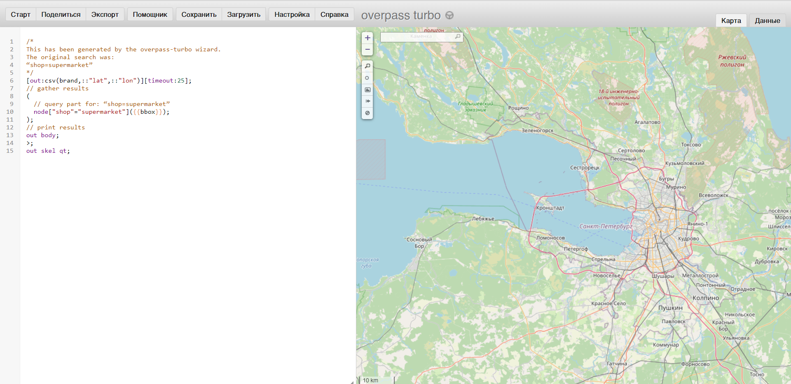
Для создания запросов используется собственный язык запросов Overpass QL (Overpass Query Language).
Есть несколько различных типов формулировок Overpass QL . Они сгруппированы в:
Параметры, которые являются необязательными глобальными переменными, устанавливаются в первом операторе запроса. Примерами настроек являются тайм-аут сервера для сервера Overpass API и формат вывода запроса Overpass QL.
Операторы блока : операторы блока группируют операторы Overpass QL вместе.
Автономные запросы: это самостоятельные полные утверждения. Они могут выполнять такие функции, как запрос к серверу Overpass API для создания набора; манипулирование содержимым существующего набора; или отправка конечных результатов запроса в место вывода. Автономные запросы сами по себе состоят из более мелких языковых компонентов Overpass QL, таких как оценщики, фильтры и операторы.
На самом деле, чтобы составить запрос вам не обязательно знать все тонкости языка запросов. Вот основные моменты, которые необходимы для запроса:
то, как объекты обозначаются в OSM - ключ и его значение;
тип объектов (не обязательно, а только, если вы хотите выгружать конкретный тип объектов - точки, линии или полигоны);
охват территории поиска - bounding box (по умолчанию задается по видимой части карты в правой половине окна, но можно задать непосредственно в запросе или выбрать вручную на карте).
Подробная информация о том, какие объекты как обозначаются в OpenStreetMap. На этой странице можно искать нужный вам тип объектов, чтобы составить запрос.
В левой части окна будет отображаться выполняемый запрос, а в правой результаты этого запроса. По умолчанию поиск осуществляется в той области, которая отображается в правой части окна (это можно скорректировать более сложными запросами, см. справку о сервисе).
Для составления запросов используется помощник. Обратите внимание, что в нем сразу можно использовать логические операторы.
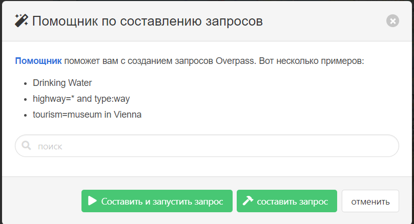
Для примера можно найти и загрузить данные по многоквартирным жилым домам (building=apartments) и основным магистральным улицам (highway=primary or highway=secondary or highway=tertiary, то есть центральные магистрали, основные магистрали районов и основные микрорайонные или межмикрорайонные транзитные улицы) в Санкт-Петербурге.
Первый запрос по поиску жилых домов выглядит примерно так. Обратите внимание, что я убрала пункт node, чтобы у нас не производился поиск точечных объектов.
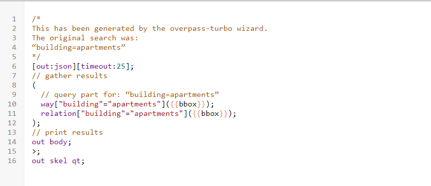
Результат запроса будет показан на карте в правой части окна.
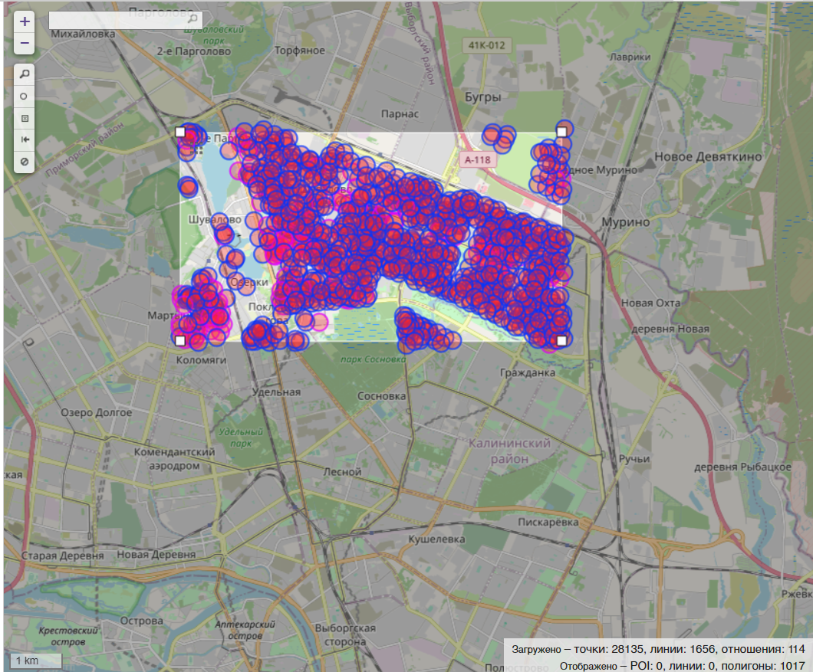
По умолчанию поиск объектов производится внутри видимой области карты в правой части окна, но с помощью кнопок управления, расположенных в этой части окна вы можете выбрать, например, прямоугольную область поиска.
В нижнем правом углу окна видно, сколько объектов какого типа было найдено, а сколько отображено.
Эспортируем результаты себе на компьютер для дальнейшей работы с ними в QGIS. Для этого нужно нажать кнопку Экспорт, после чего появится диалоговое окно экспорта.
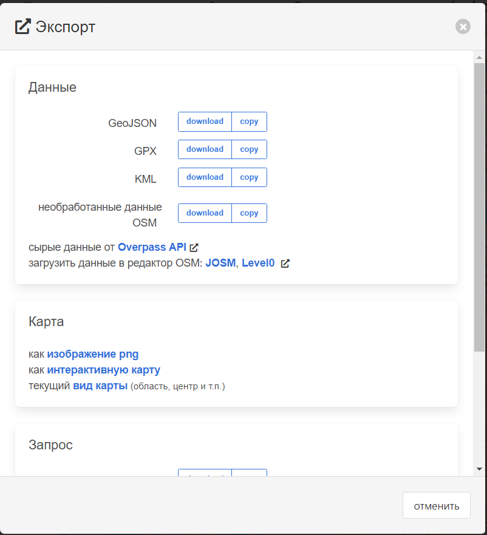
Данные можно сохранить себе в формате geojson, кроме этого формата данные также можно скачать в GPX, KML, в виде сырых данных, а также в виде данных для редактирования OSM.
При желании более подробно ознакомиться с логикой построения запросов и языком запросов, вы можете воспользоваться интерактивным учебником https://osmlab.github.io/learnoverpass//en/
Или взять уже готовые запросы из коллекции запросов https://osm-queries.ldodds.com/
Модуль QuickOSM
Кроме непосредственного использования сервиса можно скачивать данные OSM напрямую из QGIS с помощью модуля QuickOSM.
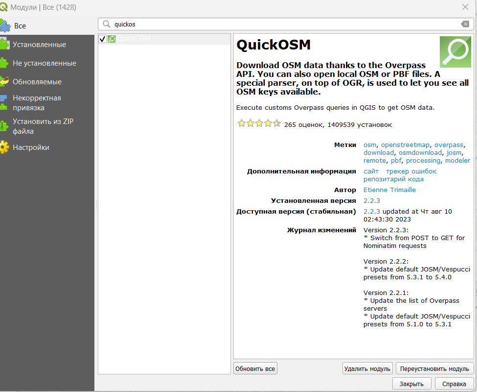
После установки модуля на панели инструментов появятся два значка 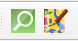, левый из которых запускает окно поиска и загрузки данных из OSM, а правый позволяет удаленно подключаться к редактированию OSM через редактор JOSM.
На вкладке Map preset вы увидите существующие по умолчанию в модуле пресеты, а также свои сохраненные в виде пресетов запросы.
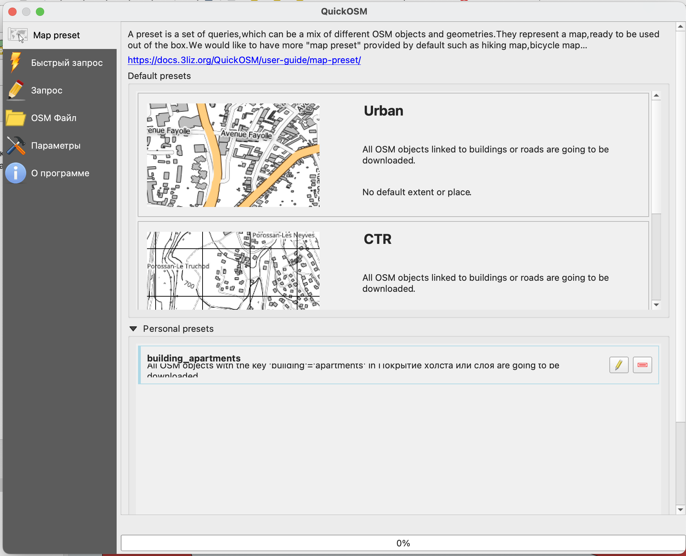
На вкладке Быстрый запрос вы можете составить свой запрос на поиск объектов.
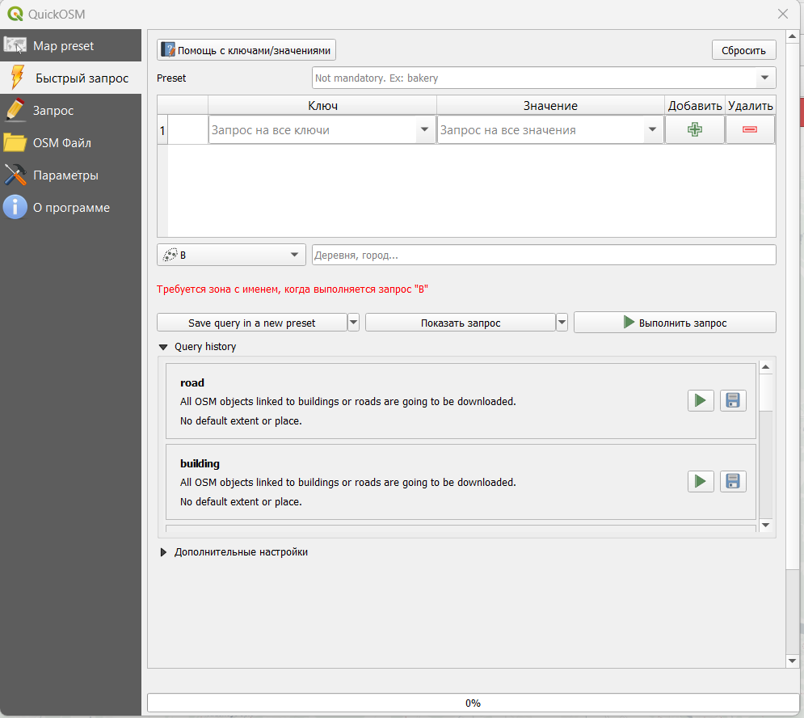
Кнопка Помощью с ключами/значениями открывает страницу с документацией модуля https://docs.3liz.org/QuickOSM/
На второй строке находятся строка выбора пресетов (Preset) - готовый запросов по поиску объектов, поэтому если вы не очень уверены в том, как какие-либо объекты обозначаются, но знаете, какие вам нужны, можно попробовать найти уже готовый запрос здесь.
Сразу под этой строкой находится таблица, где вы можете выбирать конкретные ключи и их значения.
Запрос может включать в себя сразу несколько пар ключ/значение, но в этом случае части запроса должны быть связаны одним из логических операторов AND или OR.
Главное отличие в применении этих операторов состоит в том, что при выборе AND поиск объектов будет осуществляться с учетом того, что все части запроса должны выполняться одновременно.
При использовании оператора OR будет производится поиск объектов, удовлетворяющих хотя бы одному условию из заданных.
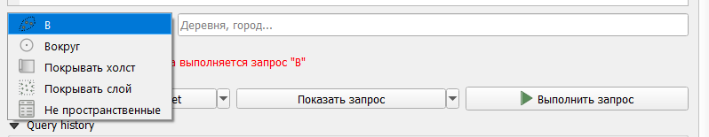
В - поиск в заданном населенном пункте;
Вокруг - поиск в заданном радиусе вокруг населенного пункта;
Покрывать холст - поиск в пределах видимой в основном окне программы части карты;
Покрывать слой - поиск в пределах охвата конкретного слоя (необходимо выбрать нужный слой);
Не пространственные - не заданная конкретная область, поэтому поиск будет производиться во всех данных OSM вне зависимости от местоположения.
Свой запрос вы можете сохранить в виде пресета (Save query in a new preset), просмотреть его (Показать запрос) и Выполнить запрос.
При нажатии на кнопку Показать запрос у вас откроется вкладка Запрос, где текст вашего запроса будет показан на языке запросов Overpass.
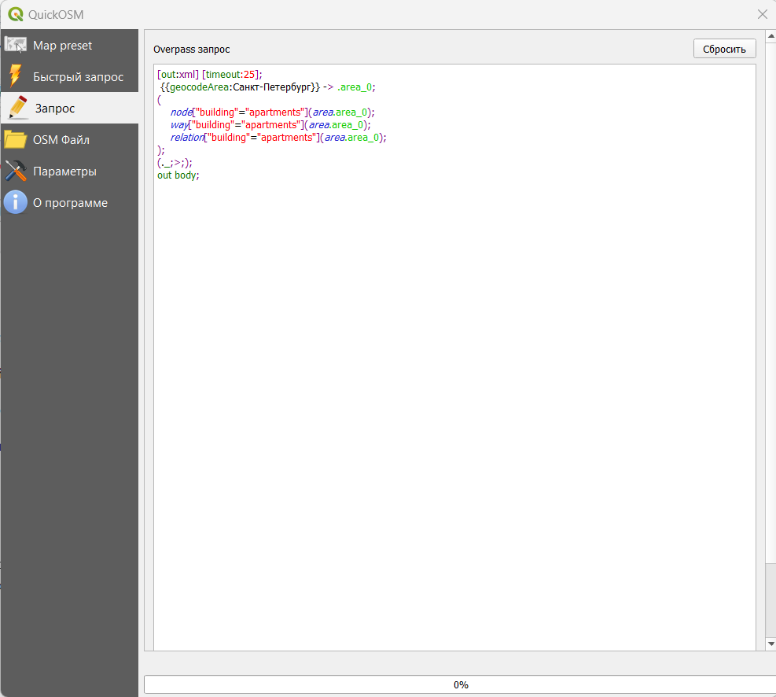
В пункте Query history на вкладке Быстрый запрос у вас будут отображаться уже сделанные вами запросы.
В дополнительных настройках быстрого запроса можно указать:
тип объекта для поиска;
время ожидания при выполнении запроса;
путь к папке для сохранения результатов запроса и формат сохранения данных, а также префикс файла для более простой идентификации.
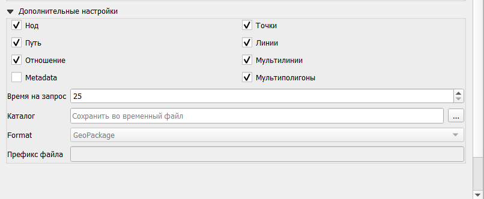
Вкладка OSM файл позволяет загружать сырые данные из OSM для их редактирования.
В Параметрах вы можете выбрать конкретный сервер Overpass для соединения и сервер Nominatim1.
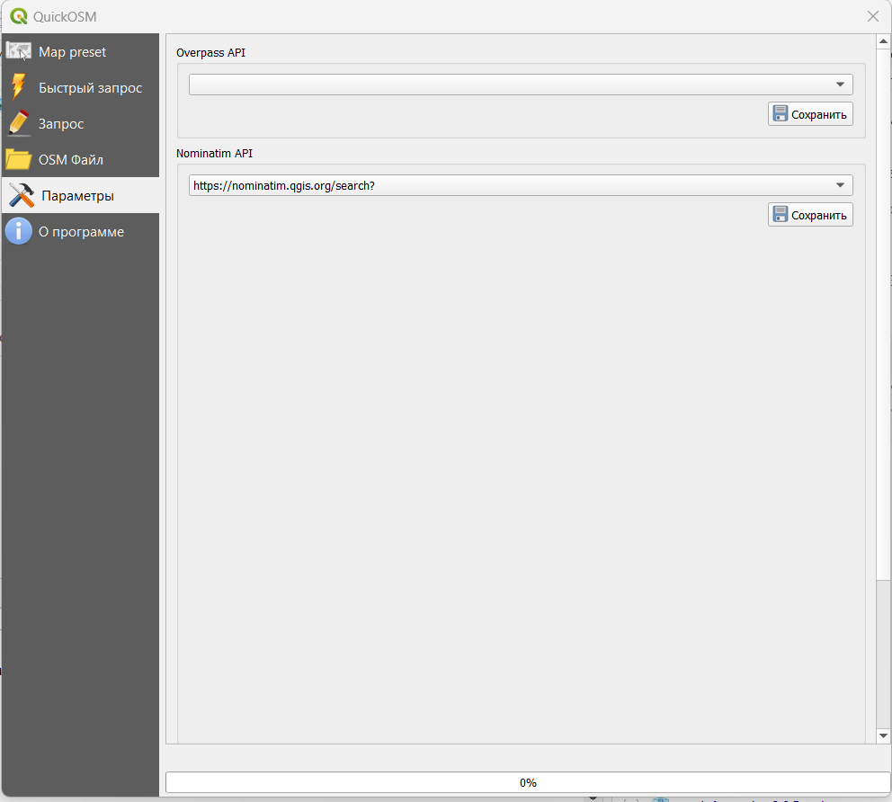
Загрузка всех объектов в заданных границах
Этот метод подойдет тем, кто сможет самостоятельно распарсить JSON файл с объектами.
Сервис https://altilunium.github.io/osm-region-downloader/ позволяет выгрузить все объекты в заданных границах (например, административно-территориальных).
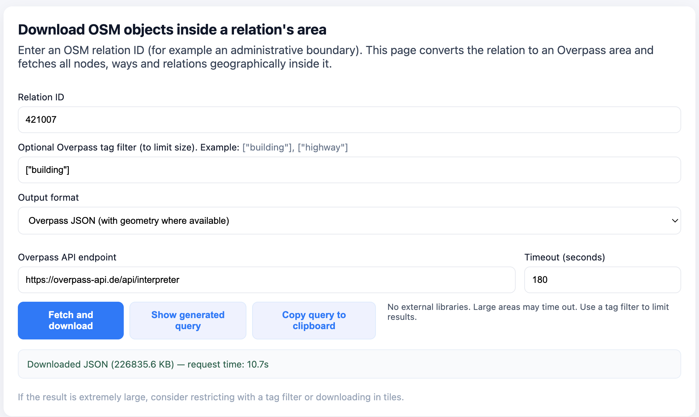
Для его использования вам достаточно указать ID границ из OSM. Это номер идентификатора объекта из базы данных.
Как его найти? Найти его можно на основном сайте OSM https://www.openstreetmap.org/ с помощью поиска.
Вы можете ввести в строку поиска название нужного вам города или региона, дождаться загрузки и скопировать идентификатор в сервис.
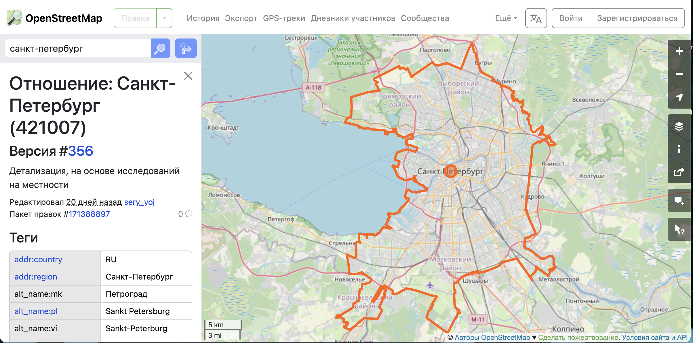
OSM-GPT
Кроме непосредственного использования Overpass можно воспользоваться OSM-GPT - сервисом на основе ChatGPT, который позволяет делать запросы с использованием естественного языка.
https://osm-gpt.rohitgautam.com.np/
Те, кому актуально скачивание данных из ЕГРН, могут воспользоваться модулем Поиск по публичной кадастровой карте.
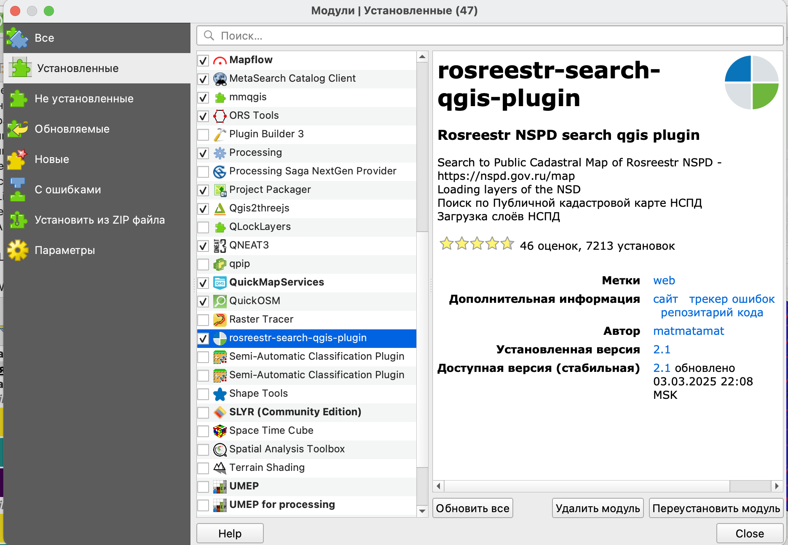
После установки он появится у вас на панели инструментов в виде значка .
Модуль позволяет скачивать объекты публичной кадастровой карты в векторном виде и добавлять слои с подложками из Национальной структуры пространственных данных (последнее требует установления на компьютере сертификатов безопасности от Минцифры).
Поиск объектов осуществляется по кадастровому/реестровому номеру.
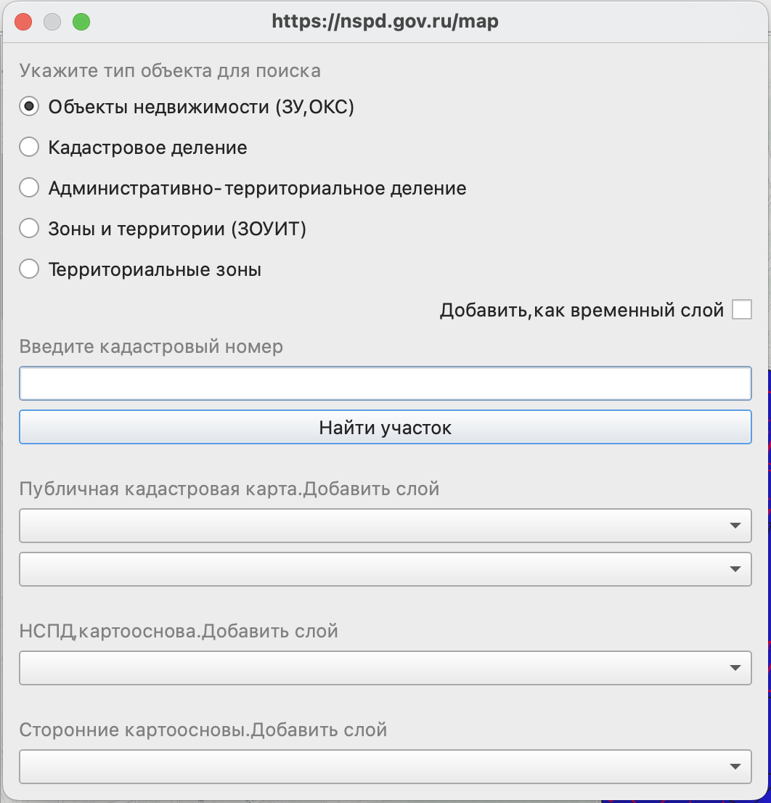
Сноски
В данном случае этот сервис нужен для осуществления геокодирования, то есть поиска положения населенного пункта по его названию↩︎